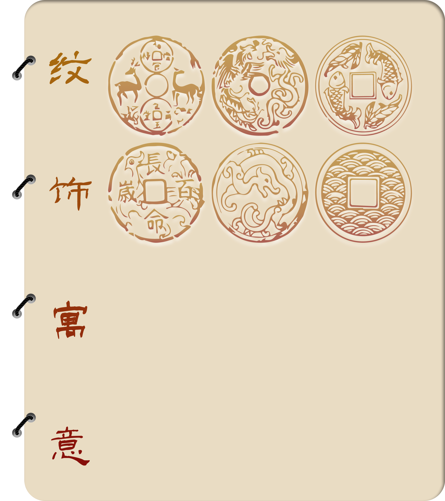
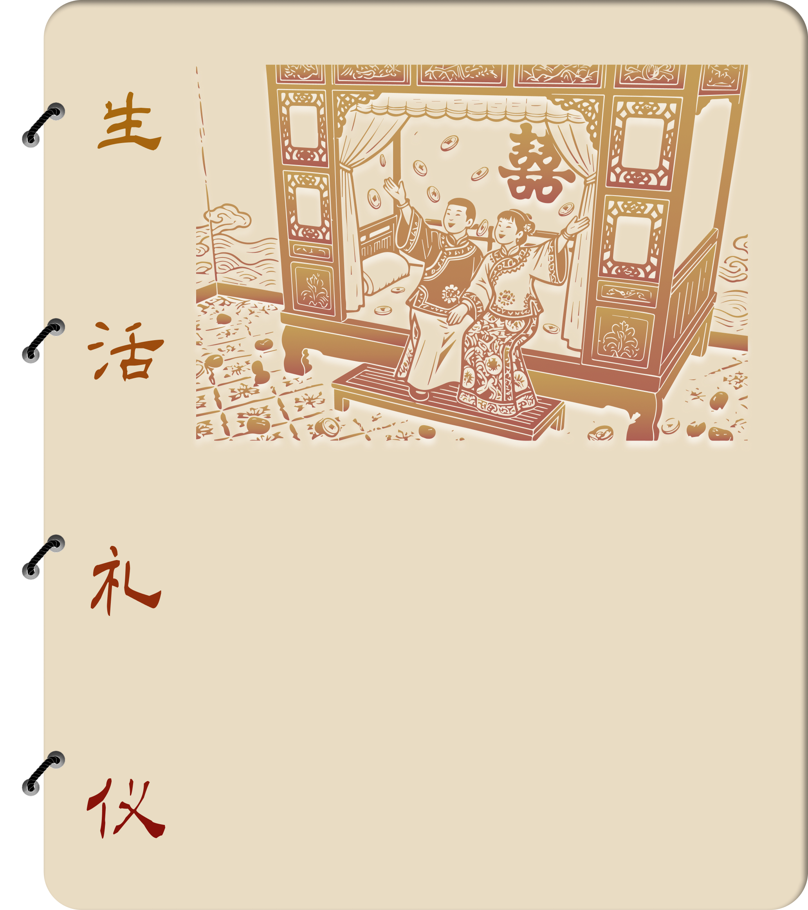

古代钱币纹饰承载文化象征，如鱼纹寓“有余”，蝙蝠纹谐音“福运”，云纹示“祥瑞”，龙纹彰皇权，花卉表富贵。这些图案融合自然崇拜与世俗愿景，通过谐音、隐喻等手法，将科举晋升、福寿安康、风调雨顺等期盼凝结于方寸之间，既美化钱体，又赋予货币超越经济功能的精神内涵，成为古人价值观的微观映射。

钱币贯穿婚丧嫁娶等礼仪：婚礼“撒帐”用特制花钱祈子，丧葬以钱币陪葬象征轮回富贵；压岁钱寄托辟邪护佑，祭祀以钱为媒介沟通鬼神。官府赏赐、文人馈赠亦常选吉语钱，兼具礼器与信物功能。钱纹与使用场景呼应，如聘礼配双喜纹，彰显礼仪制度与民俗信仰的交织。